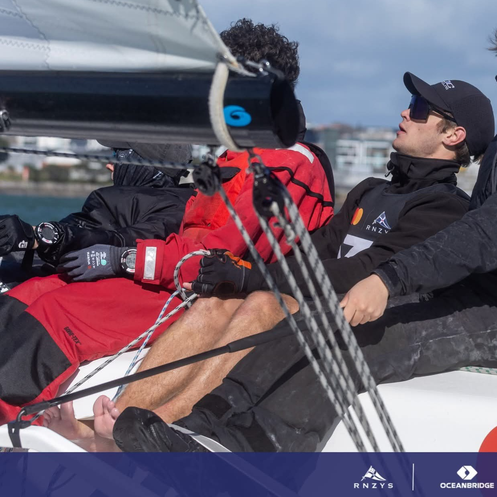
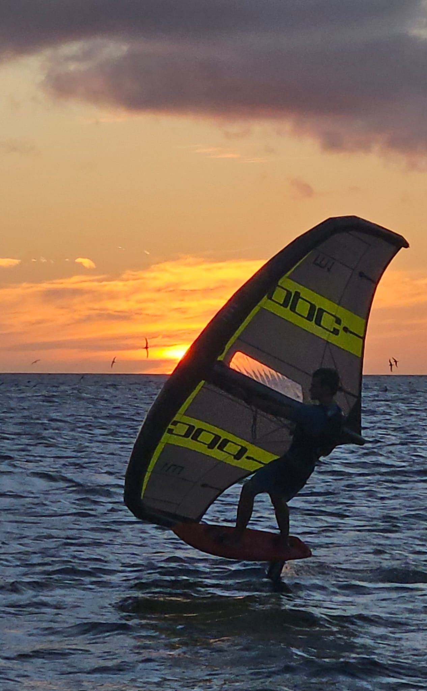
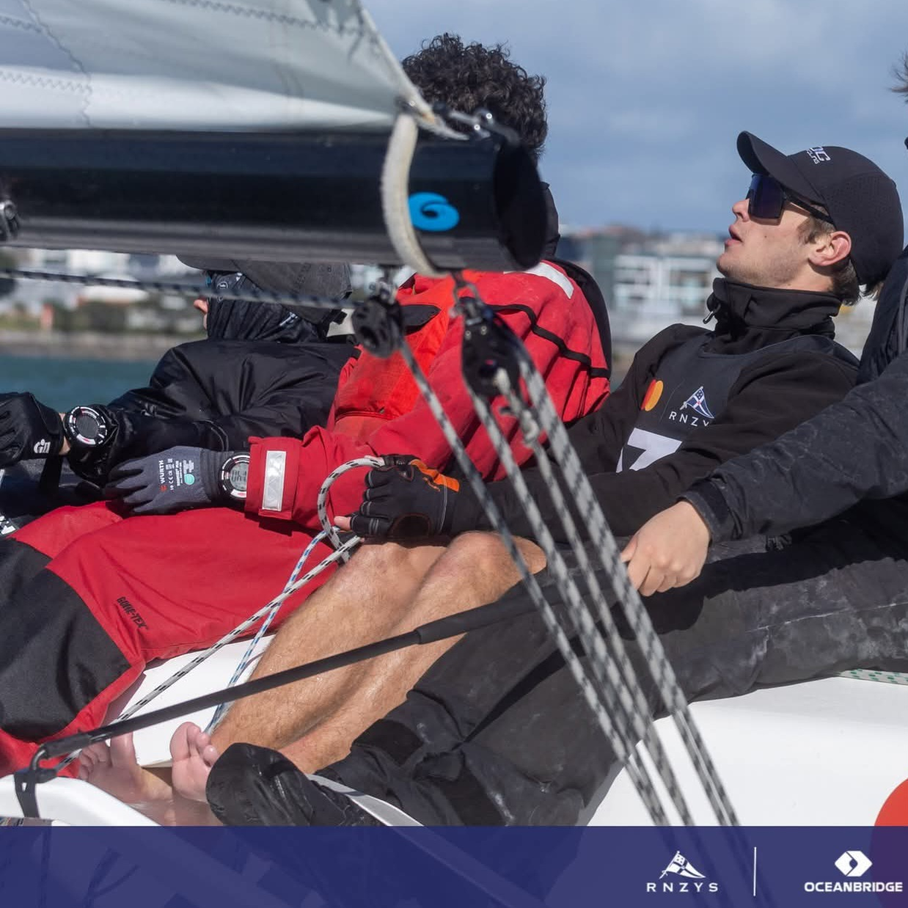
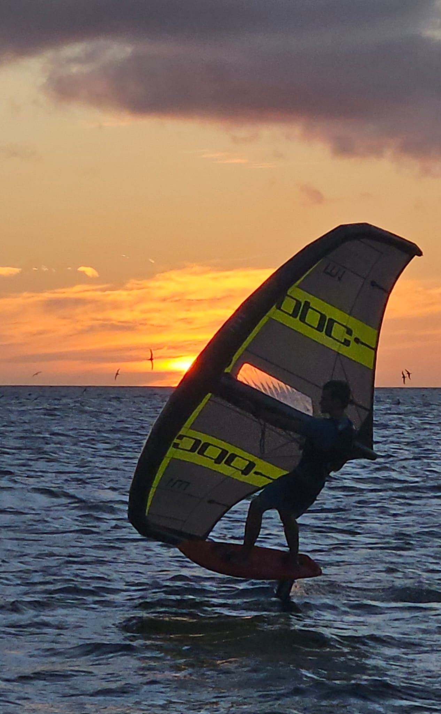

Loïck Eeman : Maritime Cadet • Competitive Sailor • Offshore Explorer
Welcome to My Official Portfolio
My name is Loïck Eeman, and I am a 19-year-old maritime cadet with a lifelong passion for the sea.
Through professional training, competitive sailing, and early offshore adventures, the ocean has shaped who I am and the career I am working toward today.
This website - which I designed and coded myself - brings together my experiences, goals, and the different paths I'm pursuing within the maritime world.
About Me
I am currently training toward my Watchkeeper Deck certificate, developing my skills through navigation practice, deck operations, and sea time.
My connection to the sea began early in life. I grew up racing dinghies, and later spent nearly four years cruising internationally with my family. A journey that eventually brought us to New Zealand and confirmed my desire to build a maritime career.
Today, I remain active in keelboat match racing, and I enjoy wingfoiling recreationally.
Whether professionally or recreationally, the ocean continues to be the center of my life.

 



What You Will Find Here
This portfolio highlights the main areas of my journey:
- • Maritime Career - Sea experience, training, certifications, and my pathway toward becoming an officer.
- • Competitive Sailing - My racing history, roles onboard, regattas, and long-term ambitions.
- • Offshore Cruising - Stories and photos from my four-year voyage, as well as my expeditions to Patagonia and Antarctica.
- • Languages - The languages I speak and use in maritime and international environments.
- • Downloadable CVs - My maritime and sailing CVs, available for download.
Each section offers a clear view of my development as a mariner, sailor, and offshore explorer.
My Vision
My long-term goal is to build a career founded on seamanship, safety, and continuous learning - progressing from Watchkeeper Deck to Chief Mate and eventually Master.
At the same time, I remain committed to competitive sailing, with ambitions in foiling classes and professional pathways such as SailGP and the America's Cup.
I aim to bring together the technical discipline of the merchant navy and the performance-driven mindset of high-level sailing.
Thank You for Visiting
Thank you for taking the time to explore my portfolio.Feel free to navigate through the pages, follow my journey, and reach out for maritime opportunities, racing projects, or collaboration.